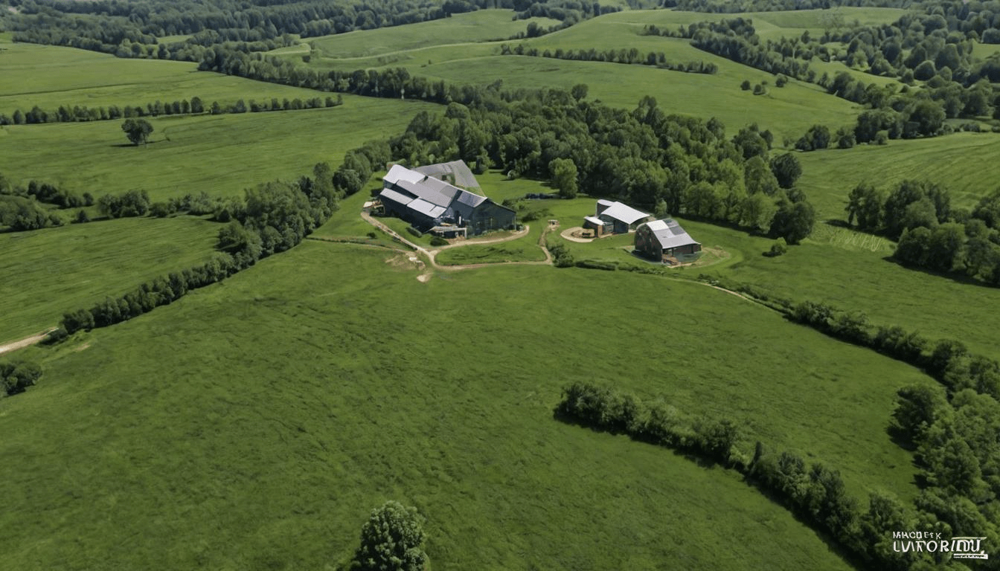
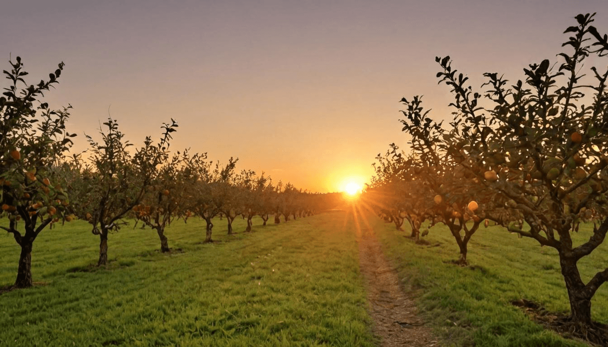
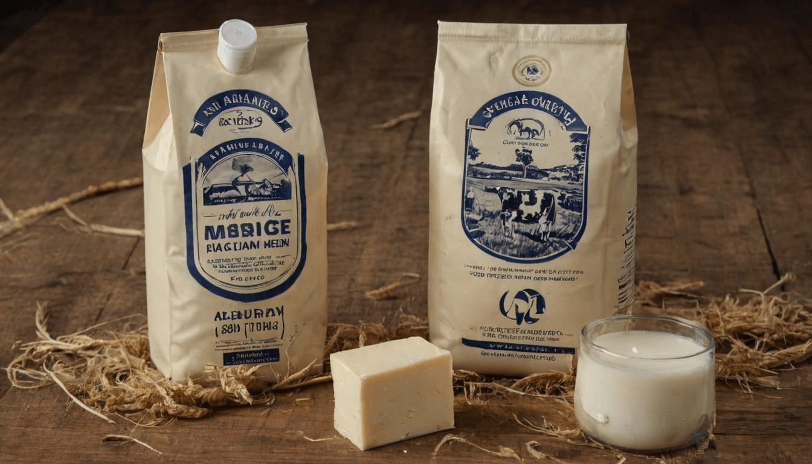

Contact Us
Got questions? We're here to help.
or connect online
We Are Proud to Work with the Best Farms in the Region

Green Valley Farms

Sunrise Orchards

Heritage Dairy
At RusticRoots, we uphold the highest standards of safety, transparency, and customer satisfaction, ensuring you receive only the best.
Choose Your Produce
Get It Delivered
Savor the Freshness
Your Questions About Fresh Produce Answered
What types of produce do you offer?
We provide a wide variety of seasonal fruits, vegetables, herbs, and specialty items. Our offerings change with the harvest, ensuring you always receive the freshest ingredients available.
Is your produce organic?
Yes, our produce is grown using organic and sustainable farming methods, free from synthetic pesticides or chemicals. We prioritize soil health and biodiversity to bring you the purest food possible.
How soon will I receive my order?
We strive for swift deliveries so you can enjoy farm-fresh produce at its peak. Most orders arrive within 24-48 hours of harvesting, ensuring maximum freshness and flavor.
Do you offer farm visits?
Absolutely! We welcome visitors to experience our farms firsthand, learn about sustainable agriculture, and witness the care we put into growing our produce.
Can I customize my order?
Yes! Choose from curated farm boxes or build your own selection to match your preferences. We make it easy to get exactly what you need, when you need it.